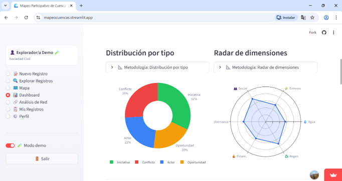

Demo pública
Demo pública


Mapeo Participativo de Cuencas

Plataforma colaborativa para analizar territorios de cuenca y conflictos socioambientales.
Desafío que resuelve: visibilizar y analizar conflictos socioambientales de un territorio de forma colaborativa.
- Registro georreferenciado de conflictos
- Mapas de calor por subcuenca
- Directorio exportable de actores